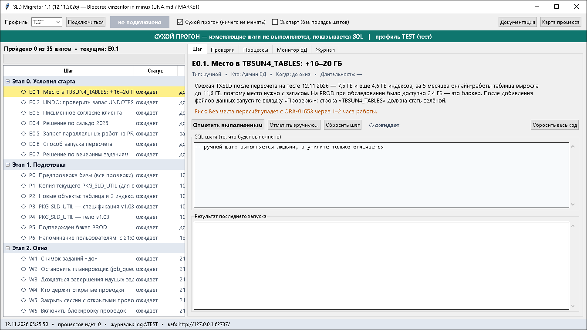
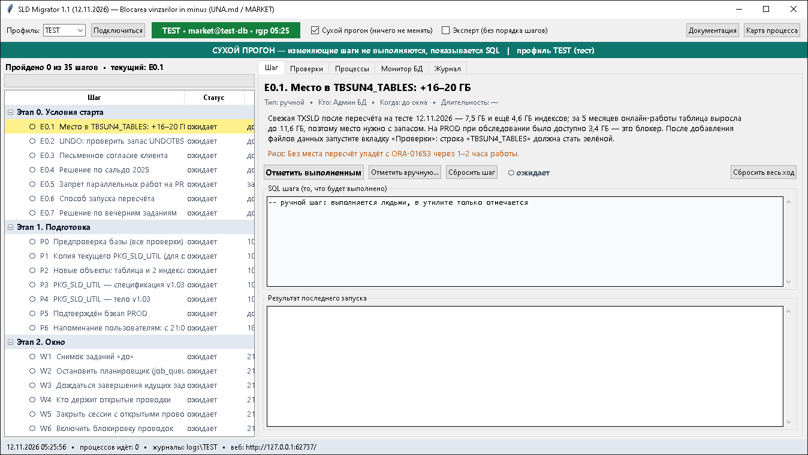
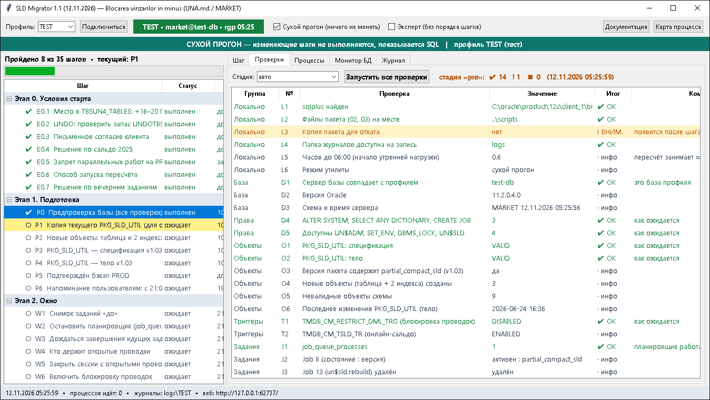
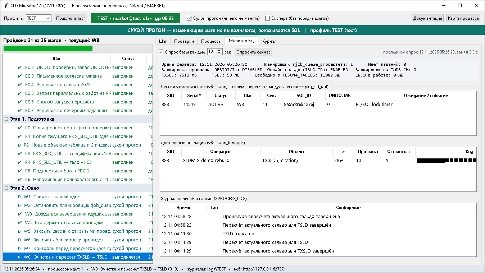
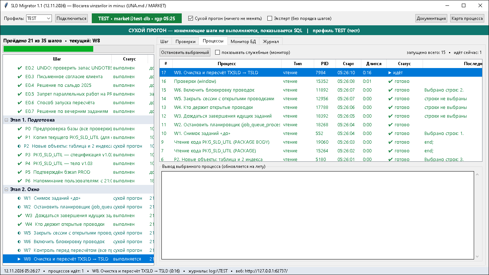
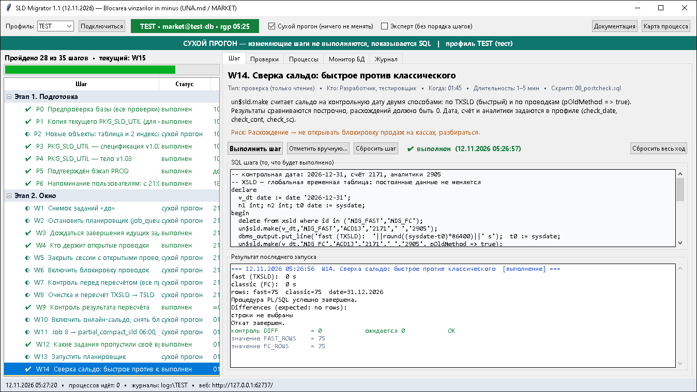
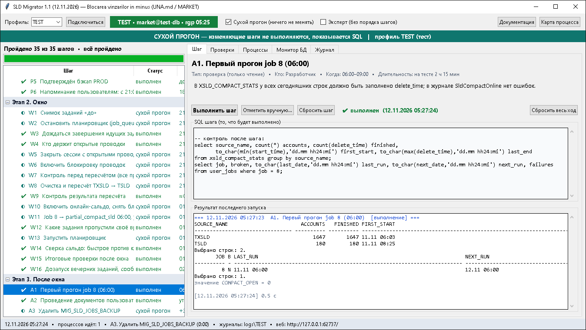

Содержание
1. Что это и зачем
Чтобы кассы могли блокировать продажу товара «в минус», back-office должен мгновенно отдавать актуальный остаток. Остаток хранится в таблицах TXSLD и TSLD; их заполняет триггер TMDB_CM_TSLD_TR при каждой проводке. На тестовой базе это настроено и проверено, на PROD — нет: триггер выключен, TXSLD пустая.
Утилита проводит перенос по шагам: ставит новый PKG_SLD_UTIL и три объекта, закрывает проводки, пересчитывает сальдо по 2,22 млрд проводок, включает онлайн-запись, перенастраивает задания и сверяет результат. На каждом шаге она показывает точный SQL, проверяет результат и не даёт перепрыгнуть через шаг.
00–08 и 99 из папки scripts. Порядок действий тот же, который проверен вручную на тестовой базе.2. Что нужно для запуска
| Что | Требование |
|---|---|
| Python | 3.8 или новее для Windows. Дополнительные пакеты не нужны: окно построено на tkinter из стандартной поставки. |
| Oracle sqlplus | Любой клиент 11g–19c. Путь задаётся в sld_migrator.ini, параметр sqlplus. |
| Сеть | Доступ к базе по адресу из профиля . |
| Учётная запись | MARKET. Нужны привилегии ALTER SYSTEM, SELECT ANY DICTIONARY, CREATE JOB — проверка D4. |
| Файлы | Папка sld_migrator должна лежать рядом с папками scripts и backup_prod. |
3. Запуск и подключение
- Запустите
run.bat(илиpython sld_migrator.pyиз папкиsld_migrator). - Выберите профиль: TEST или PROD.
- Нажмите «Подключиться» и введите пароль MARKET. Пароль хранится только в памяти до закрытия окна, в файлы и журналы не пишется.
- Утилита проверит, что сервер базы совпадает с
expected_hostпрофиля. Если нет — подключение отклоняется: это защита от запуска «не на той базе». - После подключения метка станет зелёной (TEST) или красной (PROD), а монитор начнёт опрашивать базу.


4. Окно утилиты
| Область | Что показывает |
|---|---|
| Верхняя строка | Профиль, подключение, флажок «Сухой прогон», флажок «Эксперт», кнопки «Документация» и «Карта процесса». |
| Цветная полоса | Текущий режим: зелёная — сухой прогон, оранжевая — боевой на TEST, красная — боевой на PROD. |
| Дерево шагов (слева) | Все шаги по этапам со статусом. Текущий шаг подсвечен жёлтым с пометкой «вы здесь». |
| Вкладка «Шаг» | Описание, исполнитель, время, риск, точный SQL и результат последнего запуска. |
| Вкладка «Проверки» | Набор проверок с итогом OK / ВНИМ. / СТОП. |
| Вкладка «Процессы» | Всё, что утилита запускала: PID, время, статус, вывод на лету, кнопка остановки. |
| Вкладка «Монитор БД» | Состояние базы, сессии утилиты, длительные операции, журнал пересчёта. |
| Вкладка «Журнал» | Хронология всех действий в утилите. |
Статусы шагов: ○ ожидает, ▶ выполняется, ✔ выполнен, ◐ сухой прогон, ➜ отмечен вручную, ✖ ошибка.
5. Режимы и защита PROD
Сухой прогон (включён по умолчанию)
Шаги-проверки выполняются по-настоящему: они только читают. Шаги-изменения не выполняются: утилита показывает SQL, который был бы запущен, и выполняет только контрольный запрос. Шаг получает статус «сухой прогон». Вместо пересчёта (W8) идёт 40-секундная имитация, чтобы проверить мониторинг.
Боевой режим
Снимите флажок «Сухой прогон». На TEST нужно подтвердить вопрос, на PROD — ввести слово PROD. Затем каждый изменяющий шаг спрашивает подтверждение отдельно (на PROD — снова словом PROD).
Защиты
- Проверка сервера выполняется в самой базе перед каждым запуском. При несовпадении сеанс завершается до первого оператора шага.
- Шаги идут строго по порядку. Обойти порядок можно только флажком «Эксперт».
- Изменяющие шаги выполняются с
whenever sqlerror exit rollback: первая ошибка останавливает шаг. - Установка пакета сначала сравнивает код в базе с файлом. Если совпадает, ничего не выполняется.
- Установка пакета требует копии текущего кода (шаг P1) — иначе откатывать было бы нечем.
- При смене профиля утилита возвращается в сухой прогон и требует нового подключения.
6. Порядок работ по шагам
Таблица строится из того же каталога, что и окно утилиты. Полная схема с SQL — на карте процесса.
Как выполнять
- Выберите шаг с пометкой «вы здесь». Прочитайте описание и риск, посмотрите SQL.
- Нажмите «Выполнить шаг». Ручной шаг отмечается с комментарием: кто выполнил и чем подтверждено.
- Дождитесь статуса ✔. При ✖ прочитайте «Результат последнего запуска», устраните причину и повторите.
- Шаг W3 повторяйте, пока идущие задания не закончатся.
- Шаг W8 идёт около 4 часов (на тесте 12.11.2026 — 2 ч 35 мин). Окно утилиты закрывать нельзя, компьютер не должен засыпать: с закрытием прервётся сеанс и пересчёт откатится. Соединение утилита удерживает сама — см. параметр
keepaliveв разделе 11. Если пересчёт запущен на сервере через nohup, отметьте W8 вручную после успешного W9.
7. Проверки
Вкладка «Проверки» → «Запустить все проверки». Проверки только читают. Стадия задаёт ожидания: «до миграции», «окно», «после окна». В режиме «авто» стадия берётся из текущего шага.
Итог: OK — как ожидается; ВНИМ. — посмотреть глазами; СТОП — дальше идти нельзя; инфо — значение для протокола.
Кроме базы проверяется рабочее место: найден ли sqlplus, на месте ли файлы пакета, есть ли копия для отката, доступна ли папка журналов, сколько часов до 06:00.
Отдельные проверки встроены в шаги: W3 (идущие задания), W4 (открытые проводки), W9 (результат пересчёта), W14 (сверка сальдо двумя способами), A1 (первый прогон job 8).

8. Мониторинг процессов
Каждый запуск — отдельный процесс sqlplus в своём потоке. Окно не блокируется: можно смотреть другие шаги, проверки и монитор, пока идёт длительная операция.
Вкладка «Процессы»
Номер, название, тип (чтение / ИЗМЕНЕНИЕ), PID, время старта, длительность, статус и последняя строка вывода. Выберите строку — ниже появится вывод, он дополняется на лету. «Остановить выбранный» завершает клиент sqlplus; незавершённая транзакция в базе откатывается.
Вкладка «Монитор БД»
Отдельный лёгкий сеанс раз в 10 секунд (интервал настраивается) читает:
- состояние: триггеры,
job_queue_processes, идущие задания, блокировки наTMDB_CM, размерTXSLD/TSLD, свободное место, объём UNDO в работе; - сессии утилиты в
v$session(module = SLDMIG; во время пересчёта пакет меняет модуль сессии на pkg_sld_util): SID, шаг, событие ожидания, SQL_ID, UNDO; v$session_longops— процент выполнения и оценка оставшегося времени;- журнал
XPROCESS_LOG— сообщения пересчёта и сжатия сальдо.
Во время пересчёта база загружена, и сам опрос занимает от 12 секунд до 2 минут вместо секунд; на шаг это не влияет.
Во время W8 главные признаки хода: растёт размер TXSLD, в longops идут сканирования, в журнале появляются записи «Пересчёт актуального сальдо для TXSLD … завершён».


То же самое видно в браузере: на карте процесса, раздел «Что происходит прямо сейчас». Страницу можно открыть на втором мониторе.
9. Откат
Шаг «Откат» доступен в любой момент. Он выключает оба триггера, очищает TXSLD и TSLD, возвращает код пакета из копии шага P1, снова ломает job 8 (если он уже перенастроен) и запускает планировщик. Проводки не затрагиваются. Длительность — около 15 минут.
| Когда откатывать | Условие |
|---|---|
| в любой момент | ошибка места или ORA на шаге W8, не устранённая за 30 минут |
| 03:30 | TXSLD ещё не досчитан |
| 05:00 | крайний срок: работы не закончены |
| после W14 | сверка сальдо показала расхождения, причина не найдена |
MIG_SLD_JOBS_BACKUP.10. Как утилита проверялась на TEST
Проверка выполнена на тестовой базе в три приёма. На PROD утилита запускалась только в сухом прогоне, для чтения.
| Когда | Что | Итог |
|---|---|---|
| 11.11.2026, 21:10 | сухой прогон всех шагов | SQL показан, выполнены только контрольные запросы; мониторинг проверен на 40-секундной имитации |
| 11.11.2026, 22:18–22:31 | боевой прогон всех шагов, кроме пересчёта (W8) и отката | планировщик стоял 15 секунд, проводки были заблокированы 8 секунд; три набора по 36 проверок без ошибок; сверка сальдо на 31.12.2026: 137 строк, расхождений 0 |
| 11–12.11.2026, 22:57–05:09 | полный боевой прогон вместе с шагом W8 | Попытка 1 оборвалась на 120-й минуте: сетевое оборудование разорвало молчащее соединение, база откатила посчитанное. После добавления удержания соединения попытка 2 прошла: TXSLD 1 ч 47 мин, TSLD 47 мин, весь шаг 2 ч 35 мин. Суммы и количества по всем 239 счетам TXSLD и количества по 4 счетам TSLD совпали с состоянием до пересчёта; сверка сальдо двумя способами — расхождений 0 |


11. Файлы, журналы, настройки
| Файл / папка | Назначение |
|---|---|
sld_migrator.py | окно, запуск процессов, монитор, встроенный веб-сервер |
steps.py | каталог шагов и проверок с SQL — единственное место, где они описаны |
webdocs.py | встроенные HTML-страницы: эта документация и карта процесса |
keepalive_relay.py | удержание соединения с базой на многочасовом шаге W8 |
sld_migrator.ini | путь к sqlplus, профили баз, пороги проверок. Паролей нет. |
run.bat | запуск двойным щелчком |
logs\<профиль>\ | журнал каждого запуска: полный вывод sqlplus, время, статус. Прикладывать к тикету. |
state\state_<профиль>.json | отметки шагов. Переживают перезапуск утилиты. |
backups\ | копии кода пакета, снятые шагом P1 |
docs\ | эта документация и карта процесса отдельными файлами (python sld_migrator.py --export-html) |
screenshots\ | снимки экрана проверки на TEST |
Параметры профиля
| Параметр | Смысл |
|---|---|
dsn, user | строка подключения и пользователь |
expected_host | имя сервера базы; при несовпадении работа блокируется |
kind | test или prod — включает усиленные подтверждения |
check_date, check_cont, check_sc | дата, счёт и аналитики для сверки сальдо (W14). Пустая дата = конец прошлого месяца. |
need_tables_mb, need_ind_mb, need_undo_mb | пороги проверок места. UNDO: на тесте пересчёт занял 15,5 ГБ, порог для PROD — 20 000 МБ |
keepalive | удержание соединения: через сколько секунд тишины слать пробу TCP keepalive (по умолчанию 60; 0 — выключить). Соединение идёт через локальный порт 127.0.0.1, который открывает сама утилита (keepalive_relay.py). В базе и в настройках Windows ничего не меняется. Работает, если dsn задан как //сервер:порт/служба или полным описателем с одним адресом; с псевдонимом из tnsnames удержание не включается — об этом сообщает журнал при подключении |
jqp_default | значение job_queue_processes, если шаг W1 его не запомнил |
Кодировка: файлы SQL хранятся в UTF-8, утилита передаёт их в sqlplus в CP1251 (NLS_LANG=AMERICAN_AMERICA.CL8MSWIN1251). При ручном запуске этих файлов через sqlplus кириллица в сообщениях пакета исказится — используйте утилиту.
12. Типичные ошибки
| Сообщение | Причина и действие |
|---|---|
| sqlplus не найден | Исправьте путь sqlplus в sld_migrator.ini. |
| ORA-01017 | Неверный пароль. |
| ORA-12170, ORA-12541 | Нет сети до базы или не тот порт в профиле. |
| «Это не та база» | Сервер не совпал с expected_host. Проверьте профиль и строку подключения. |
| «Сначала выполните шаг …» | Нарушен порядок. Выполните указанный шаг. |
| ORA-01653 на W8 | Кончилось место в TBSUN4_TABLES. Добавить файл данных; если не успеть — откат. |
| ORA-30036 на W8 | Кончился UNDO. Расширить UNDO, повторить W8; если не успеть — откат. |
| ORA-00054 на W6 или W10 | Таблица занята. Утилита ждёт до 5 минут; затем повторите W4–W5. |
| ORA-03113, ORA-03114, ORA-03135 на W8 | Обрыв сети. База откатывает посчитанное — дождитесь конца отката (на вкладке «Монитор БД» исчезнет сессия пересчёта; на тесте откат шёл 75 минут), затем повторите W8 или запустите на сервере. Если обрыв случился ровно на 120-й минуте, значит, выключено удержание соединения: проверьте параметр keepalive и строку «Удержание соединения включено» в журнале при подключении. |
| «контроль не прошёл» | Шаг выполнился, но состояние базы не то, что ожидалось. Читайте вывод шага. |
13. Безопасность
- Пароль вводится при подключении, передаётся в sqlplus через стандартный ввод и не попадает в командную строку, файлы настроек и журналы.
- Для автоматических прогонов пароль можно передать переменной окружения
SLDMIG_PWD_TEST/SLDMIG_PWD_PROD. - Веб-страницы доступны только с этого компьютера (127.0.0.1) и только на чтение: из браузера ничего запустить нельзя.
- После работ клиент меняет пароль учётной записи (шаг A4).